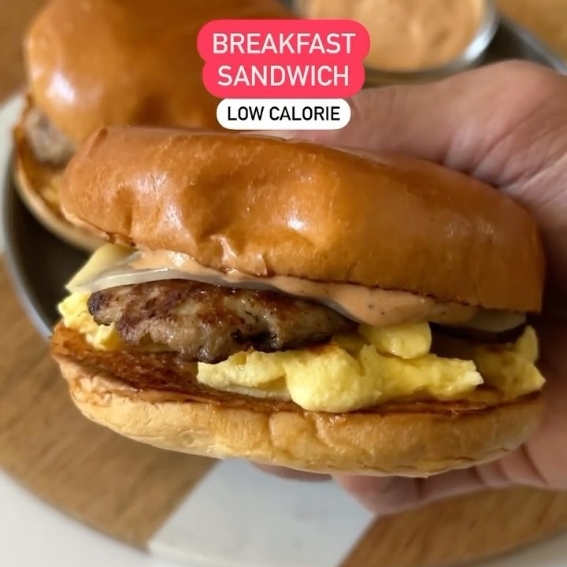

Sandwich Desayuno
Ingredientes:
- 2 Pan Brioche
- 1 rebanada de provolone reducido en grasa
Preparación de salchicha de pavo (2-3 porciones):
- 8 oz de pavo molido
- 1/4 cucharadita de sal
- 1/4 cucharadita de ajo en polvo
- 1/4 cucharadita de pimienta negra
- 1/4 cucharadita de jarabe de arce
Huevos:
- 138g de claras de huevo o sustituto de huevo
- Pizca de sal
Mayonesa chipotle (2 porciones):
- 2 cucharadas de mayonesa ligera
- 1/2 cucharadita de salsa adobo de chipotle
- 1/4 cucharadita de polvo de chipotle
- 1/4 cucharadita de pimentón ahumado
Instrucciones:
- Inicia con la salchicha de pavo, con las especias en la lista y combina bien hasta hacer de dos a
tres bolitas. Cocinalas en la sartén
- También cocina el huevo en combinación con la sal y procede a hacer el montaje del sándwich; pan
brioche, 1 cucharada de mayonesa chipotle, 1/2 de la mezcla de huevos, 3 oz de salchicha de pavo, 1
rebanada de provolone reducido en grasa y la espinaca